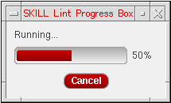
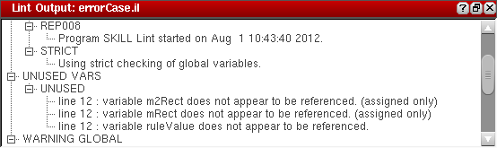

Running the SKILL Lint Tool
You can run the Lint checker tool either on the files and directories set up using the Lint Manager assistant, or the currently open file in the source code pane.
The Lint checker tool does not run on blank files, that is, files containing only spaces, tabs, or return characters.
Running Lint Checker on Multiple Files and Directories
After you have set up the files and directories for the Lint checker, you can run the Lint tool on the selected files or directories. To do so:
-
Click
(Run Lint Tool) in the Lint Manager assistant or
(Lint all tabs) in the Lint toolbar. The SKILL Lint Progress Box displays.
 -
After the Lint tool has run, the Lint Manager assistant is updated with the summary of the run result. You can then view the Lint output report in the Lint Output window or the CIW.
To see the Lint report for a particular SKILL file, select the file name from the Lint Manager assistant. The Lint Output window is updated with the Lint report of the selected file.
The Lint output report is organized into a tree structure with nodes representing errors, warnings, suggestions, hints, information, and unused variables. You can expand the nodes in the Lint Output window and click a message to view the corresponding code in the Source code pane. For example, if the Lint Output window reports that a variable is unused at line 12, you can click the message under UNUSED VARS and view the corresponding code in the source code pane.
Running Lint Checker on the Currently Open File
To run the Lint tool for the currently open file:
- Click (Lint current tab) in the Lint toolbar.
-
After the Lint tool has run, the Lint Output window is updated with the run result.
Lint tool can be run on the file currently open in the editor, even if the file has not been saved.
Related Topics
Setting Up Files/Directories for the Lint Checker
Return to top